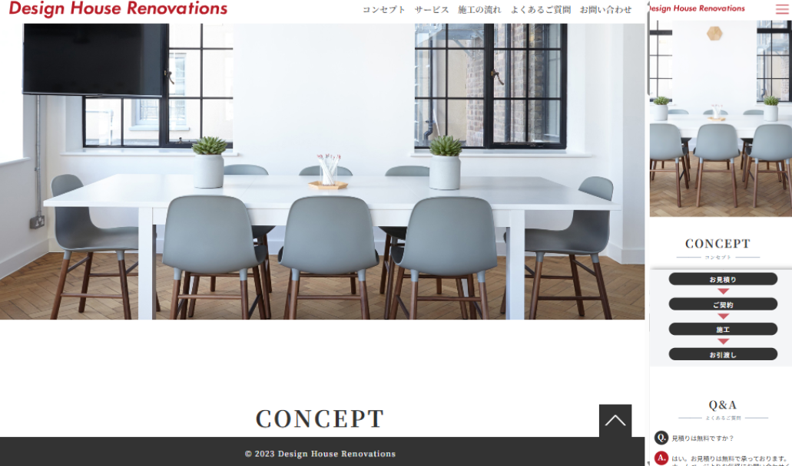
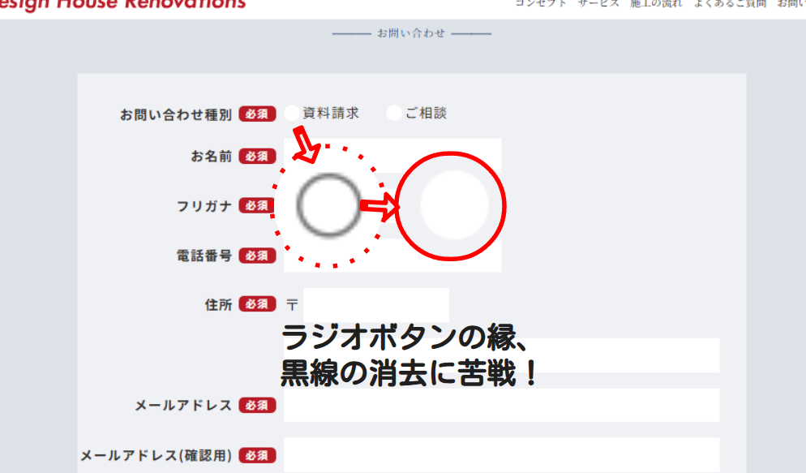
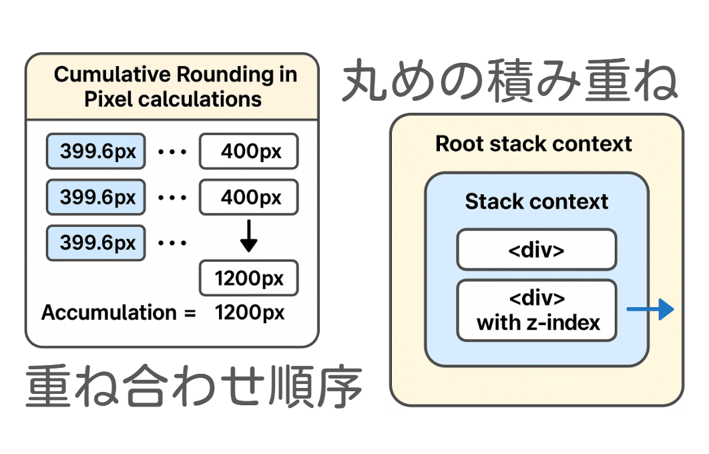
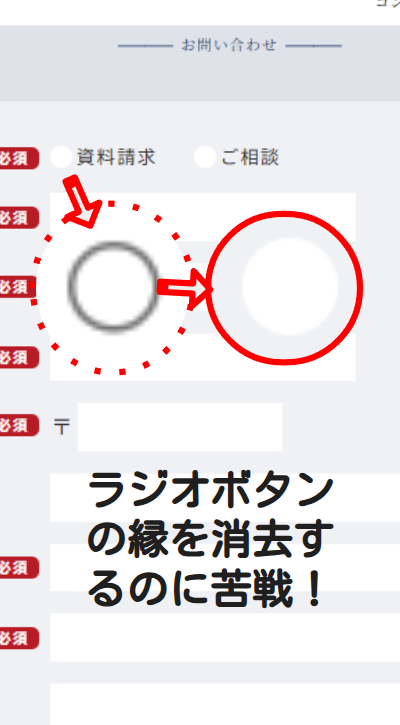
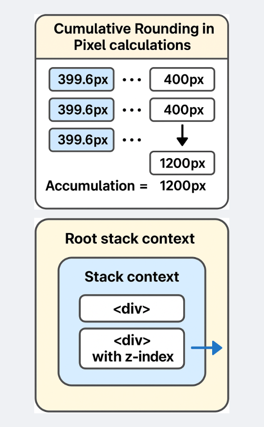

Practice 制作演習
HTML/CSSの基礎演習 リフォーム会社（架空）のHP制作





単独での演習。HTML＋CSSのみで、 リフォーム会社のホームページ制作。 figmaのカンプ通りにモバイルページから作業開始。 企業広報・広告で エンゲージメント・成約率は重要。 ユーザー層を想定し▹moreのホバーや入力画面の大きさも配慮。 ページが仕上がっていく過程が見え楽しいフェーズ。 全体構成をきちんと把握できずに作業を進めたため、終盤での調整に苦戦。 スケジュールと各作進捗管理が課題として明確に。 (コードはGitHubへ)
最初のHP制作物としては〇。時間管理が課題。
作業総時間：８０時間程度
Initial Task
初動演習
HTMLとCSS、ほぼゼロからのスタート。 とにかく「手を動かす」ことを意識して、ちょっと難しい課題にも挑戦。 先生は全部教えるのではなく、「読んで、書いて、表示させて、質問と発表」 でまさにアクティブラーニング。質問する時は、「何がどうわからないか」 「問題点」を整理する。また自分でも調べる力（自走力）も徐々に身につく。 クラスの仲間とのやり取りも、知識の定着に繋がった。 あっという間に時間が過ぎ、コーディングを学び始めたばかりから、ずっと 内容の濃い学習が続く！
About
私のこと
熱情と好奇心
マークとロゴは私自身のVI。マークは下部の英文字フレーズの意味を絵にした羅針盤と灯。 決して激しくはない熱情。新しいこと、変化を求め続ける人生でありたい。 本ページのトップとボトム部分に配置した「HICreat」ロゴは、イニシャルとの掛け合わせ。 主に創造性を意識しています。またそこから飛躍して、High、Island、Complement、Eat、 など、どうか少しでもご興味を抱いてくだされば本望です。
【キャリアチェンジ・スキル】
2024/04~現在
- プログラミング・エンジニアに向けて活動中
- 中央キャリアアップアカデミー 2025年3月～
- HTML/CSS、JavaScript、PHPの基礎を学習中
- Web制作の実践的なスキルを習得中
- ポートフォリオを作成中
- 東京大学ブロックチェーンイノベーション寄付講座 2024年4月～
- 個人情報保護の観点から暗号技術に惹かれて受講
- ブロックチェーン技術の基礎
- スマートコントラクトの開発
- 分散型アプリケーション（DApps）の設計と実装
- セキュリティとプライバシーの考慮
- ブロックチェーンのビジネス応用
- 上記他、Web3 に関する内容を網羅的に学習
- solidity基礎・合宿講座受講
- Linux入門（Linux Foundation - Education）にて基礎学習
- Web3、IT教育関連の各種プロジェクトのイベントに積極参加
- プログラミング学習を継続し、スキルアップに努める
【職歴】
1991/04~2024/03
- 株式会社ＪＳコーポレーション
- 大阪本社、入社・勤務1991年4月～1992年3月
- 関東支社、新規開拓1992年4月〜1998年3月
- 関東への市場進出における新規顧客開拓
- 営業企画職（学校法人向け）
- 広告提案・制作
- 各種売り上げ目標達成、広告・出版物の完全納品
- テレフォンマーケティング組織化・設営
- 採用・教育
- 業績評価により課長昇進
- 大阪本社営業部隊の補強1998年4月〜2000年6月
- 大阪本社営業部門の補強（立て直し）
- 各種売り上げ目標達成、広告・出版物の完全納品
- 新拠点（広島営業所）開設2000年6月〜2024年3月
- 中四国エリア顧客開拓のハブ拠点として広島営業所を新設
- 初年度1人ですべての業務を行い、６年で５名体制へ
- 各種売り上げ目標達成、広告・出版物の完全納品
- 関東支社の体制強化2007年4月〜
- 売上・代金回収・総務・新卒採用の強化
- 営業体制の強化
- 塾・予備校新規事業部立ち上げ2012年4月〜2018年3月
- 新規事業の立ち上げに伴う、営業・企画・制作
- 新規顧客開拓
- 塾予備校業界大手経営層との関係構築
- 高校進路指導事業部2018年4月〜2024年3月
- 高各高等学校生徒へサイト利用者登録依頼
- 進路ガイダンス企画・実施
- 新外部講師として講演
- 2024年3月 一身上の都合により退職
趣味で行ったマニアなサーフポイント
■フランス：ビアリッツ
パリからTGVで6時間。飛行機だと1時間。海岸までは 駅・空港ともにアクセス良好。 夜行列車だと未明着なので交通手段が無く、徒歩で4～50分。 街と家々が綺麗なので徒歩も◎。 ボードは海岸のショップでレンタル可能。 その昔、ベルギーに向かうカカオ運搬船の寄港地だった そうで、高級チョコレートでも有名。
■ニューヨーク：ロッカウェイ
マンハッタンから地下鉄で一時間ちょい。 ロングビーチとは異なりキラキラ感はないが近い。 90st駅付近に道具すべてレンタルできるフレンドリーなサーフショップ があり手ぶらでアクセス可能。 ビーチは管理されゴミも少なく、常にバギーのパトロールが あり、のんびりとした雰囲気。 東北の日本海側のような水温。
■喜界島：池治海岸
まず、波乗り目的で来る人はほとんどいない島。 基本サンゴがあちこち突起しているので干潮時によく確認しないと 危険。有名なダイビングポイントでもあるのでそちらがオススメ。 また、隆起サンゴ独特の地形やドラマで撮影された風景、地下ダムという 隠れたモノもある。
■島根：折居海岸
■島根三隅 折居海岸：道の駅裏
ここの波を当てるのは難しい。山陰本線の土手に遮られシークレットビーチのような雰囲気。 線路土手下の用水路トンネルからアクセスすると秘境感抜群。散策や磯遊びなども◎。 この辺り、夜の列車に乗り海を見ると、車窓からの明かりが浅い海底を透かし幻想的で息をのむほど。